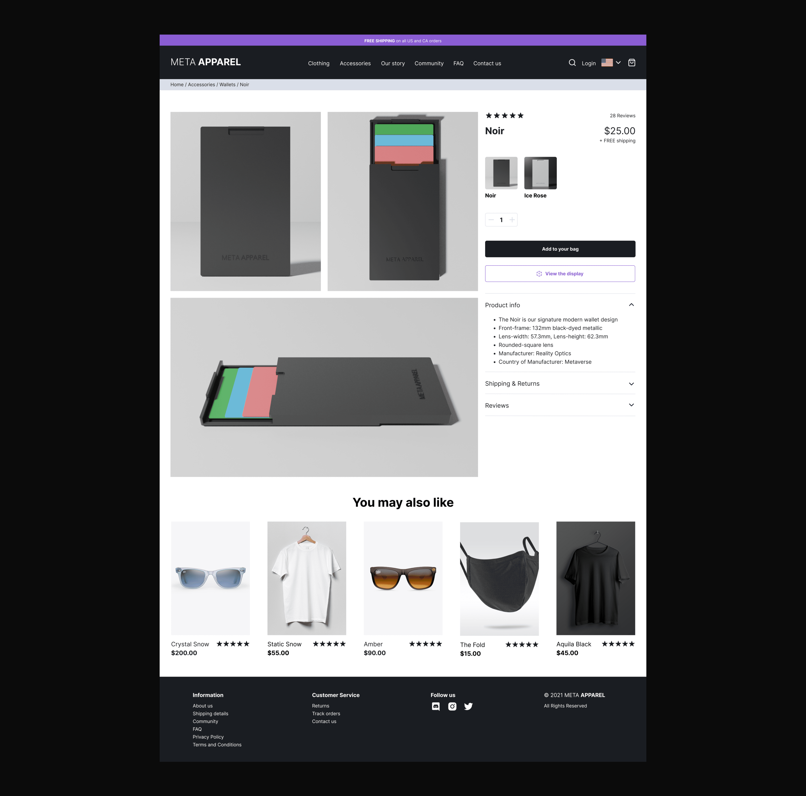
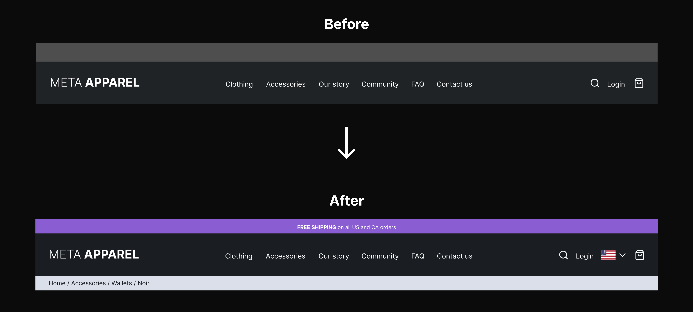
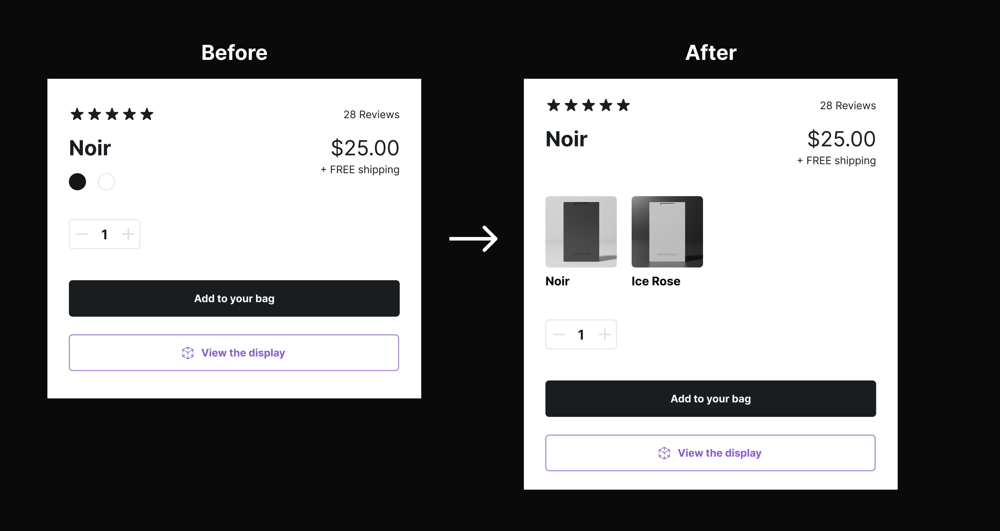

Designing the ideal shopping experience
With my nearing the end of the Google UX Design Professional Certificate program, the last course gave me
the option to come up with my own idea. I decided to identify UX problems within the ecommerce industry and create
solutions that would promote an improved customer experience on digital devices.
Project: Ecommerce
Team: I’m alone 😔
Timeline: August - September, 2021
Role: UX/UI, Strategy, 3D, AR
Tech: Figma, Unity, Blender

Product Information page
AUGMENTED REALITY
Use Augmented Reality to enhance your shopping experience.
Emerging technologies such as AR are proving to be useful in many industries and leading E-Commerce businesses
are taking advantage of this new trend.
Ideation on high-fidelity insights
Using data from previous research and low-fidelty test results, I created high-fidelity mockups and tested again with the previous 5 testers.

Increasing the navigation's usability and accessibility
• I added breadcrumbs as a waypoint for users to know where they are in the website.
• I included the American flag icon as a visual to indicate various language options for accessibility.

Clarifying product versions
• 40% of the testers commented on how they preferred seeing alternative product photos instead of color markers as it's easier for them to understand.
CONCLUSION
Reflection & Learnings
The outcome of this project was beyond my expectations and a great way to complete the Google UX Design Professional Certificate program. The duration
of this process presented challenges and opportunities.
It was a challenge to find physical and remote people who were willing to participate
in my research studies and test my prototypes. But I'm thankful to those who helped out.
The opportunities were an invaluable experience and allowed me to continue exercising my design thinking, polishing my UI skills and practicing 3D design and AR/VR development.